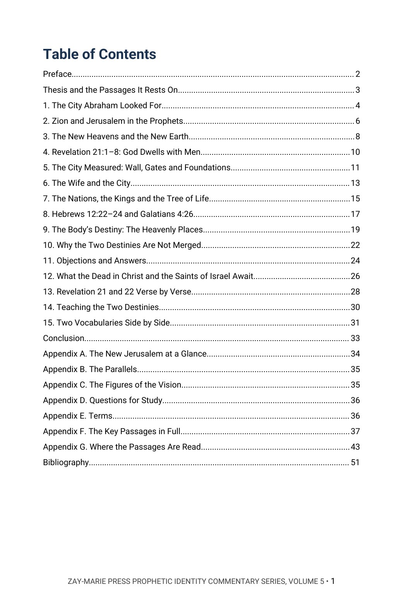
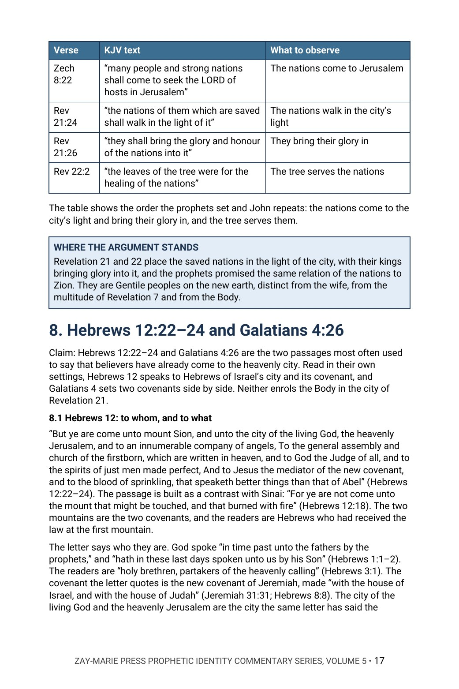
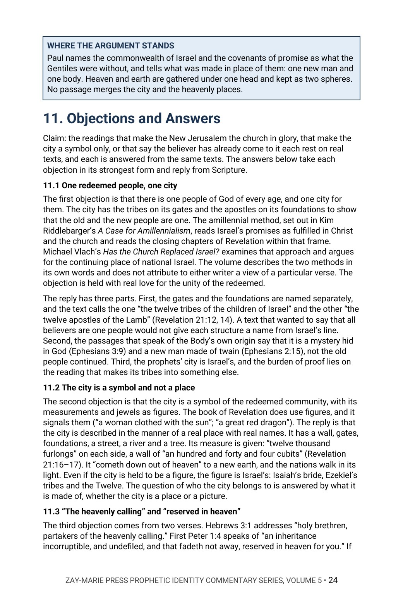

The Eschatological Community
Israel’s City, the Nations in Its Light, and the Body’s Place in the Heavenly Places
Whose city is the New Jerusalem, and where does the Body of Christ belong?
Abraham “looked for a city which hath foundations, whose builder and maker is God.” John sees that city come down from God out of heaven, with twelve gates named for the tribes of Israel and twelve foundations bearing the names of the twelve apostles of the Lamb. This commentary argues that the New Jerusalem is the city of Israel’s prophetic hope, that the saved nations walk in its light on the new earth, and that the Body of Christ has a different calling and a different destination, stated in Paul’s own letters.
It follows the city from Abraham and the Psalms through Isaiah and Ezekiel to Revelation 21 and 22, reads the wife and the city, the nations and the tree of life, and takes up Hebrews 12:22–24 and Galatians 4:26 in their own settings. It then sets out the Body’s heavenly places in Ephesians, Philippians and Colossians, and shows why the two destinies are not merged.
New to the framework? The Digital Studies teach the distinctions this volume relies on. Start with the Digital Studies →
A Commentary That Argues a Position
This volume does not survey the views and leave the choice to the reader. It states what the author believes the closing chapters of Revelation and the prophets teach about the city, sets out the evidence from the Law, the prophets and the letters, and answers those who disagree where they are strongest, including the reading that makes the New Jerusalem the church in glory and the reading that treats the city as a symbol only.
It is the fifth volume of the Prophetic Identity Commentary Series, which asks who the people of the prophets and of Revelation are. It is a different kind of book from the Digital Studies, which walk through a passage and report what the text says. The volume asks that the city be left with the people to whom the Scriptures gave it, and that the Body’s own hope be read as Paul wrote it. Scripture is quoted from the King James Version throughout.
Related Reading
Digital Studies
Study 4 — Israel and the Body of Christ Records the distinctions in destiny alongside those of identity and covenant without arguing a position.
Study 5 — The Heavenly Calling Maps the Body’s heavenly blessings, citizenship, hope and purpose as the passages state them.
Study 69 — The Eternal State Records what each eternal-state passage states without arguing beyond the text.
Commentary Series
Identity Volume 1 — The Bride Identity in Prophecy The Lamb’s wife and the city that carries her name.
Identity Volume 4 — The Olive Tree The Gentiles’ share in Israel’s blessing, and why the Body is not the tree.
Doctrinal Packets
Doctrinal Packet — Revelation Interprets the book of Revelation through its key passages in five pages; read it for the book’s own structure before this volume’s argument.
Doctrinal Packet — Hebrews Interprets the book of Hebrews through its key passages in five pages; read it for the book’s own structure before this volume’s argument.
Doctrinal Packet — Galatians Interprets the book of Galatians through its key passages in five pages; read it for the book’s own structure before this volume’s argument.
From Abraham’s City to the New Earth
The City the Fathers Sought
Follow the promise of a city from Abraham and the Psalms through Isaiah and Ezekiel before John writes.
The New Earth and the Tabernacle
Read Isaiah’s new heavens and new earth and Revelation 21:1–8, where God dwells with men.
The Wall, the Gates and the Foundations
Read what is written on the gates and the foundations, and ask whose names they are.
The Wife, the Nations and the Tree
Read the wife and the city, the nations in the city’s light and the leaves for their healing.
Hebrews 12 and Galatians 4
Read the two passages most used to place the believer in the city, each in its own setting.
The Body’s Heavenly Places
Read the destination the Body’s own letters state, and why the two destinies stay distinct.
Read the Word in Its Context
Revelation 21:1–27
The new earth, the descending city, the gates, the foundations and the nations in its light.
Revelation 22:1–5
The river of water of life, the tree of life and the throne of God and of the Lamb.
Hebrews 11:8–16
Abraham looked for a city which hath foundations, whose builder and maker is God.
Isaiah 54 and 62
The wife, the stones of the city and the new name.
Isaiah 65:17–25
New heavens and a new earth, with Jerusalem created a rejoicing.
Ezekiel 48:30–35
The gates named for the tribes, and the name of the city: The LORD is there.
Hebrews 12:18–24
Mount Sion, the heavenly Jerusalem and the mediator of the new covenant.
Ephesians 1:3; 2:6
Blessed and seated together with Christ in the heavenly places.
What This Book Sets Out to Do
This volume argues a doctrinal position and defends it from the whole canon.
It says what the author believes the passages teach, sets out the evidence from the Law, the prophets and the letters, and answers the strongest objections in the objectors’ own terms.
Preview the Volume Before You Purchase
Click any page to enlarge it for reading.


Table of Contents
See the full order of the argument, from the Preface to the Bibliography.



The Argument at Work
See the method: Hebrews 12:22–24 read for its readers, its covenant and its city.


Objections and Answers
See the readings that oppose the volume stated, and the answer to each.
A Full Commentary on One City
52-Page Digital PDF
Cover and a fully numbered interior.
Fifteen Chapters
From the city Abraham looked for to two vocabularies set side by side.
Objections and Answers
The church-in-glory, symbol and heavenly-calling readings stated fairly and answered from the text.
Verse-by-Verse Reading
Revelation 21:1–22:5 walked in order, each clause set beside its earlier home in the prophets.
Comparison Tables
The city in the prophets and in Revelation, the two destinies and the two vocabularies side by side.
Conclusion
The position restated in full, with a closing table.
Seven Appendices
The city at a glance, the parallels, the figures of the vision, study questions, terms, twenty-three key passages in full and a verse-by-verse Scripture index with page numbers.
Bibliography
Every work cited, listed by author and title.
The Eschatological Community
52-page digital PDF · For personal use
Part of the Prophetic Identity Commentary Series. Own all five volumes: $54.99 (save $19.96) · See the series bundle →
← Back to the Commentary Collection